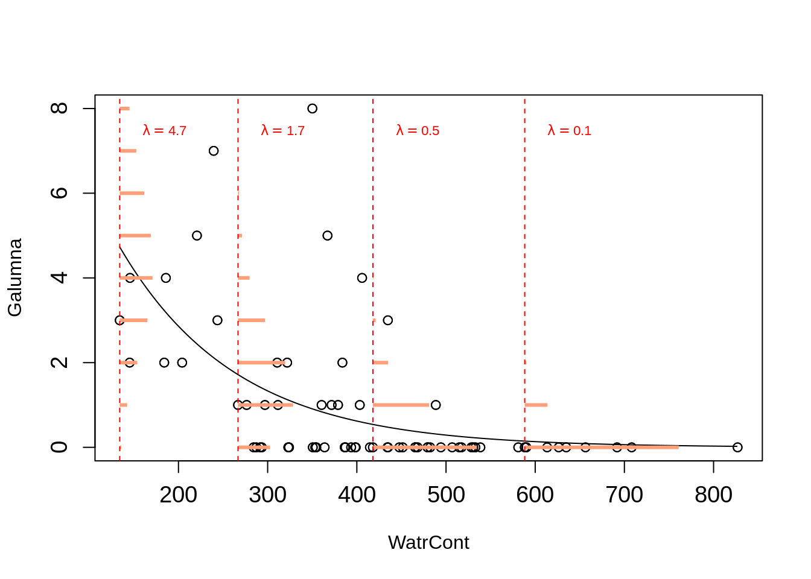
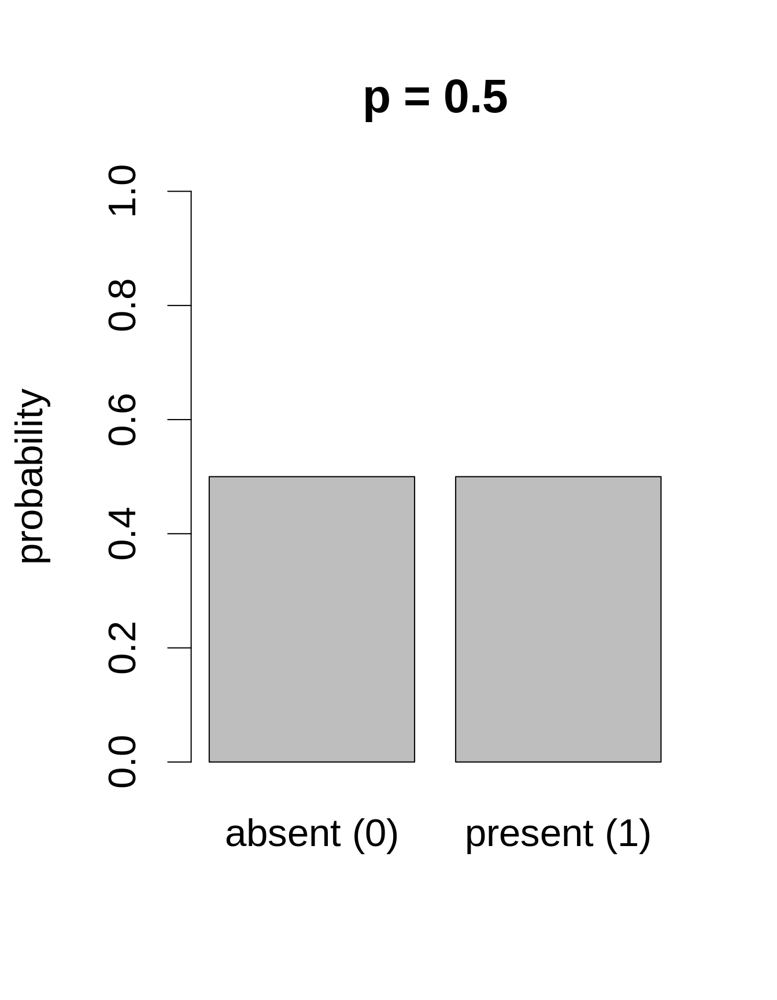

Chapter 7 Binomial GLMs
A common response variable in ecological datasets is the binary variable: we observe a phenomenon \(Y\) or its “absence”. For example, species presence/absence is frequently recorded in ecological monitoring studies. We usually wish to determine whether a species’ presence is affected by some environmental variables. Other examples include the presence/absence of a disease within a wild population, the success/failure to record a specific behaviour, and the survival/death of organisms. Usually, we are interested in questions such as: how do species occurrences vary in function of the environment?
\[Occurrences = f(Environment)\]
Under a linear model, expected values can be out of the [0, 1] range with lm():
# set up some binary data
Pres <- c(rep(1, 40), rep(0, 40))
rnor <- function(x) rnorm(1, mean = ifelse(x == 1, 12.5, 7.5), sd = 2)
ExpVar <- sapply(Pres, rnor)
# linear model with binary data...
lm(Pres ~ ExpVar)
7.1 GLM with binomial data: logit link
A regression that has a binary response variable is one of many generalized linear models and is called a logistic regression or a logit model.
A generalized linear model is made of a linear predictor:
\[\underbrace{g(\mu_i)}_{Link~~function} = \underbrace{\beta_0 + \beta_1X_1~+~...~+~\beta_pX_p}_{Linear~component}\] Consider that \(Y_i ∼ B(n_i, p_i)\), and that we want to model the proportions of \(Y_i^{}/n_i\). As such:
\(E(Y_i^{}/n_i) = p_i\) and \(\text{var}(Y_i^{}/n_i) = \frac{1}{n_i}p_i(1-p_i)\) , so that \(V(\mu_i) = \mu_i(1-\mu_i)\).]
We first move the probabilities \(\mu_i\) to the odds:
\[\text{odds}_i = \frac{\mu_i}{1-\mu_i}\]
The odds puts our expected values on a 0 to +Inf scale.
We then take logarithms, calculating the logit or log-odds:
\[\eta_i = \text{logit}(\mu_i) = \log(\frac{\mu_i}{1-\mu_i})\]
with \(\mu\) being the expected values (probability that \(Y = 1\) ), and with the expected values now ranging from -Inf to +Inf.
We can understand that as if event A has probability p of occurring, then the odds of event A occurring is the ratio of the probability that A occurs to the probability that A does not occur: \(p/(1−p)\). For example, if the probability that I will fail my courses is 0.6, the odds that I will fail my courses is \(0.6/(1 − 0.6) = 1.5\). This means that the probability of observing a failure in my courses is 1.5 times greater than the probability of not observing it (that is, \(1.5 × 0.4 = 0.6\)).
In R, presence (or success, survival…) is usually coded as 1 and absence (or failure, death…) as 0. A logistic regression (or any other generalized linear model) is performed with the glm() function. This function is different from the basic lm() as it allows one to specify a statistical distribution other than the normal distribution.
A reminder about our glm() function:
–
| Distribution of \(Y\) | Link function name | Link function | Model | R |
|---|---|---|---|---|
| Normal | Identity | \(g(\mu) = \mu\) | \(\mu = \mathbf{X} \boldsymbol{\beta}\) | gaussian(link="identity") |
| Binomial | Logit | \(g(\mu) = \log\left(\dfrac{\mu}{1-\mu}\right)\) | \(\log\left(\dfrac{\mu}{1-\mu}\right) = \mathbf{X} \boldsymbol{\beta}\) | binomial(link="logit") |
| Poisson | Log | \(g(\mu) = \log(\mu)\) | \(-\mu^{-1} = \mathbf{X} \boldsymbol{\beta}\) | poisson(link="log") |
| Exponential | Negative Inverse | \(g(\mu) = -\mu^{-1}\) | \(\log(\mu) = \mathbf{X} \boldsymbol{\beta}\) | Gamma(link="inverse") |
–
In R, we can therefore build a binomial GLM with a logit link as follows:
7.2 Exercise 1
Let’s build our first generalized linear model! Here, we want to build a logistic regression model using the mites data
# Exercise 1 - our first GLM!
# setwd('...')
mites <- read.csv("data/mites.csv", header = TRUE)
str(mites)## 'data.frame': 70 obs. of 9 variables:
## $ Galumna : int 8 3 1 1 2 1 1 1 2 5 ...
## $ pa : int 1 1 1 1 1 1 1 1 1 1 ...
## $ totalabund: int 140 268 186 286 199 209 162 126 123 166 ...
## $ prop : num 0.05714 0.01119 0.00538 0.0035 0.01005 ...
## $ SubsDens : num 39.2 55 46.1 48.2 23.6 ...
## $ WatrCont : num 350 435 372 360 204 ...
## $ Substrate : chr "Sphagn1" "Litter" "Interface" "Sphagn1" ...
## $ Shrub : chr "Few" "Few" "Few" "Few" ...
## $ Topo : chr "Hummock" "Hummock" "Hummock" "Hummock" ...We can fit the logistic regression model of the presence of Galumna sp. as a function of water content and topography as follows, using the glm() function and the family argument:
To see the model output, we run:
##
## Call:
## glm(formula = pa ~ WatrCont + Topo, family = binomial(link = "logit"),
## data = mites)
##
## Deviance Residuals:
## Min 1Q Median 3Q Max
## -2.0387 -0.5589 -0.1594 0.4112 2.0252
##
## Coefficients:
## Estimate Std. Error z value Pr(>|z|)
## (Intercept) 4.464402 1.670622 2.672 0.007533 **
## WatrCont -0.015813 0.004535 -3.487 0.000489 ***
## TopoHummock 2.090757 0.735348 2.843 0.004466 **
## ---
## Signif. codes: 0 '***' 0.001 '**' 0.01 '*' 0.05 '.' 0.1 ' ' 1
##
## (Dispersion parameter for binomial family taken to be 1)
##
## Null deviance: 91.246 on 69 degrees of freedom
## Residual deviance: 48.762 on 67 degrees of freedom
## AIC: 54.762
##
## Number of Fisher Scoring iterations: 6Doesn’t this structure resembles the one from summary.lm()? IT does, right? However you might notice that there are some special differences (e.g. dispersion parameter) we will discuss further in this book!
7.3 Challenge 1
Using the bacteria dataset (from the MASS package), model the
presence of H. influenzae as a function of treatment and week of test.
Start with a full model and reduce it to the most parsimonious model.
Load the MASS package and the bacteria dataset:
## 'data.frame': 220 obs. of 6 variables:
## $ y : Factor w/ 2 levels "n","y": 2 2 2 2 2 2 1 2 2 2 ...
## $ ap : Factor w/ 2 levels "a","p": 2 2 2 2 1 1 1 1 1 1 ...
## $ hilo: Factor w/ 2 levels "hi","lo": 1 1 1 1 1 1 1 1 2 2 ...
## $ week: int 0 2 4 11 0 2 6 11 0 2 ...
## $ ID : Factor w/ 50 levels "X01","X02","X03",..: 1 1 1 1 2 2 2 2 3 3 ...
## $ trt : Factor w/ 3 levels "placebo","drug",..: 1 1 1 1 3 3 3 3 2 2 ...This dataset was made to test the presence of the bacteria H. influenzae in children with otitis media in the Northern Territory of Australia. Dr A. Leach tested the effects of a drug on 50 children with a history of otitis media in the Northern Territory of Australia. The children were randomized to the drug or a placebo. The presence of H. influenzae was checked at weeks 0, 2, 4, 6 and 11: 30 of the checks were missing and are not included in this data frame.
7.3.1 Challenge 1: Solution
# Challenge 1 - Solution
# Fit models (full to most parsimonious)
model.bact1 <- glm(y ~ trt * week, data = bacteria, family = binomial)
model.bact2 <- glm(y ~ trt + week, data = bacteria, family = binomial)
model.bact3 <- glm(y ~ week, data = bacteria, family = binomial)
# Let's compare these models using a likelihood ratio test (LRT).
anova(model.bact1, model.bact2, model.bact3, test = "LRT")## Analysis of Deviance Table
##
## Model 1: y ~ trt * week
## Model 2: y ~ trt + week
## Model 3: y ~ week
## Resid. Df Resid. Dev Df Deviance Pr(>Chi)
## 1 214 203.12
## 2 216 203.81 -2 -0.6854 0.70984
## 3 218 210.91 -2 -7.1026 0.02869 *
## ---
## Signif. codes: 0 '***' 0.001 '**' 0.01 '*' 0.05 '.' 0.1 ' ' 1Based on these results, we select model #2 as the best candidate to model these data.
7.4 Interpreting the output of a logistic regression
The output of our logistic regression indicates that both water content and topography are significant:
## Estimate Std. Error z value Pr(>|z|)
## (Intercept) 4.46440199 1.670622482 2.672299 0.0075333598
## WatrCont -0.01581255 0.004535069 -3.486728 0.0004889684
## TopoHummock 2.09075654 0.735348234 2.843220 0.0044660283But how do we interpret the slope coefficients? Remember that we applied a transformation on our expected values (i.e. the probability that Y = 1 so we have to use an inverse function to properly interpret the results.
7.4.1 An example using the identity link
If we were to use the identity link function, the interpretation is much easier. Assuming we have a binary outcome \(y\) and two covariates \(x_1\) and \(x_2\) and a constant. The probability of a successful outcome ( \(y = 1\) ) is given by:
\[Pr(y_i = 1) = p = g^{-1(\beta_0 + x_{1i}\beta_1 + x_{2i}\beta_2)}\]
where \(g^{-1}()\) is the inverse link function.
For the identity link, the interpretation of the \(\beta_1\) coefficient is straighforward For one-unit increase in \(x_1\), \(\beta_1\) dictates a constant difference in the outcome.
\(\Delta{y_i} = [\beta_0 + (\color{red}{x_{1i} + 1})\beta_1 + x_{2i}\beta_2] - (\beta_0 + x_{1i}\beta_1 + x_{2i}\beta_2)\)
\(\Delta{y_i} = \beta_1\)
7.4.2 Interpreting the coefficients using the logit link
In a linear logistic model with two covariates \(x_1\) and \(x_2\), we have:
\[log({\dfrac{p}{1-p}})=\beta_0 + x_{1i}\beta_1 + x_{2i}\beta_2\]
This corresponds to a log odds ratio! We can the use an exponential function to rewrite that model to get the odds ratio:
\[\dfrac{p}{1-p}=exp(\beta_0 + x_{1i}\beta_1 + x_{2i}\beta_2)\]
If we want to convert the odds into probability, given a coefficient \(\alpha\) we would use the inverse logit link function (also known as the logistic function):
\[ Pr(y_i = 1) = logit^{-1}(\alpha) = \dfrac{1}{1 + exp(-\alpha)} = (\dfrac{1}{1 + exp(-\alpha)}) * (\dfrac{exp(\alpha)}{exp(\alpha)}) = \dfrac{exp(\alpha)}{exp(\alpha) + 1}\]
Now going back to our model, this gives us:
\[Pr(y_i = 1) = \dfrac{exp(\beta_0 + x_{1i}\beta_1 + x_{2i}\beta_2)}{1 + exp{(\beta_0 + x_{1i}\beta_1 + x_{2i}\beta_2)}}\]
Since the inverse link is nonlinear, it is difficult to interpret the coefficient. However, we can look what happens to the differences for a one-unit change to \(x_1\):
\[\Delta{y_i} = \dfrac{\exp[\beta_0 + (\color{red}{x_{1i} + 1})\beta_1 + x_{2i}\beta_2]}{1 + \exp{[\beta_0 + (\color{red}{x_{1i} + 1})\beta_1 + x_{2i}\beta_2]}} - \dfrac{\exp[\beta_0 + x_{1i}\beta_1 + x_{2i}\beta_2]}{1 + \exp{[\beta_0 + x_{1i}\beta_1 + x_{2i}\beta_2]}}\]
\[\Delta{y_i} = \exp(\beta_1)\ \]
As \(x_1\) increases by one unit, the odds increase by a factor of \(\exp(\beta_1)\).Note that the odds values here are considered when all other parameters are kept constant.
With this, we can now interpret the results of our model:
##
## Call: glm(formula = pa ~ WatrCont + Topo, family = binomial(link = "logit"),
## data = mites)
##
## Coefficients:
## (Intercept) WatrCont TopoHummock
## 4.46440 -0.01581 2.09076
##
## Degrees of Freedom: 69 Total (i.e. Null); 67 Residual
## Null Deviance: 91.25
## Residual Deviance: 48.76 AIC: 54.76For a one-unit increase (or decrease) in our coefficients, we can obtain the odds for the presence of mites.
## WatrCont TopoHummock
## 0.9843118 8.0910340The topography parameter value is 8.09. It means that the probability of observing Galumna sp. is 8.09 times more likely when the topography is hummock compared to blanket.
When the odds value is smaller than 1, interpretation is a little bit more complicated. When this is the case, we have to take the inverse value (i.e. 1 divided by the odds) to facilitate interpretation. The interpretation is then how LESS likely it is to observe the event of interest. For water content, the odds is 0.984. The inverse is: \[\dfrac{1}{0.984} = 1.0159\]. This means that a one-unit increase in water content decreases the likelihood of observing Galumna sp. by 1.0159. We can also subtract 1 from the odds value to obtain a percentage: \((1.0159 - 1) * 100 = 1.59%\). So there is a 1.59% decrease in probability of observing Galumna sp. with a one-unit increase in water content. To convince ourselves that it is an appropriate interpretation, we can plot the presence of Galumna sp. as a function of water content. We see that, on average, Galumna sp. presence is higher at lower water content than its “absence”.

7.5 Predictive power and goodness-of-fit
An easy and intuitive way to evaluate the predictive power of your model is to compare its deviance to the deviance of a null model. Deviance can be understood as a generalisation of the residual sum of squares when models are estimated by maximum likelihood (i.e. it is how parameters are estimated in GLM). This allows us to compute a pseudo-R2 statistic, which is analogous to the coefficient of determination R2 in ordinary least square regression (i.e. the basic method for linear models). The generic formula to compute a pseudo-R2 is given by:
\[\text{pseudo-R}^2 = \dfrac{\text{null deviance} - \text{residual deviance}}{\text{null deviance}}\]
where “null deviance” is the deviance of the null model and “residual deviance” is the deviance of the model of interest. The difference is divided by the null deviance so that the result is bound between 0 and 1.
The unit deviance is a measure of distance between \(y\) and \(μ\).
\[{\displaystyle d(y,y)=0}\] \[{\displaystyle d(y,\mu )>0\quad \forall y\neq \mu }\]
The total deviance \({\displaystyle D(\mathbf {y} ,{\hat {\boldsymbol {\mu }}})}\) of a model with predictions \({\hat {\boldsymbol {\mu }}}\) of the observation \(\mathbf {y}\) is the sum of its unit deviances: \[{\displaystyle D(\mathbf {y} ,{\hat {\boldsymbol {\mu }}})=\sum _{i}d(y_{i},{\hat {\mu }}_{i})}\] Now, the deviance of a model that has estimates \({\hat {\mu }}=E[Y|{\hat {\theta }}_{0}]\) can be defined by its likelihood: \[D(y,{\hat {\mu }})=2{\Big (}\log {\big (}p(y\mid {\hat {\theta }}_{s}){\big )}-\log {\big (}p(y\mid {\hat {\theta }}_{0}){\big )}{\Big )}\] with \(\hat \theta_0\) denoting the fitted values of the parameters in the reduced model, while \({\displaystyle {\hat {\theta }}_{s}}\hat \theta_s\) denotes the fitted parameters for the saturated model.
The residual deviance is defined as 2 times the log-likelihood ratio of the full model compared to the reduced model: \[D(y,{\hat {\mu }})=2{\Big (}\log {\big (}p(\text{saturated model}){\big )}-\log {\big (}p(\text{reduced model}){\big )}{\Big )}\]
And, the null deviance is defined 2 times the log-likelihood ratio of the full model compared to the null model (i.e. predictors are set to 1).
\[D(y,{\hat {\mu }})=2{\Big (}\log {\big (}p(\text{saturated model}){\big )}-\log {\big (}p(\text{null model}){\big )}{\Big )}\]
Now we can run this in R. Let us compare the deviance of your model (residual deviance) to the deviance of a null model (null deviance). The null model is a model without any explanatory variable and it looks like this:
The saturated (or full) deviance model is a model with all explanatory variables:
Residual and null deviances are already stored in the glm object:
## [1] "aic" "boundary" "call"
## [4] "coefficients" "contrasts" "control"
## [7] "converged" "data" "deviance"
## [10] "df.null" "df.residual" "effects"
## [13] "family" "fitted.values" "formula"
## [16] "iter" "linear.predictors" "method"
## [19] "model" "null.deviance" "offset"
## [22] "prior.weights" "qr" "R"
## [25] "rank" "residuals" "terms"
## [28] "weights" "xlevels" "y"We can then use these deviance values to calculate the pseudo-R2 value:
# calculate the pseudo-R2
pseudoR2 <- (logit.reg$null.deviance - logit.reg$deviance) / logit.reg$null.deviance
pseudoR2## [1] 0.4655937Hence, the model explains 46.6% of the variability in the data.
An adjusted McFadden’s pseudo-R2, which penalizes for the number of predictors, can be calculated as below:
\[ R^2_{adj} = 1 - \frac{logL(M)-K}{logL(M_{null})} \]
where K corresponds to the additional number of predictors in relation to the null model.
The goodness-of-fit of logistic regression models can be expressed by variants of \(pseudo-R^2\) statistics, such as Maddala (1983) or Cragg and Uhler (1970) measures.
When talking about logistic regressions, low R2 values are common.
The R function DescTools::PseudoR2() makes it possible to calculate
many types of \(pseudo-R^2\). By specifying which = all, calculate all
of them at once.
# Calculate many pseudo-R2!
logit.reg <- glm(pa ~ WatrCont + Topo,
data = mites,
family = binomial(link = "logit"))
DescTools::PseudoR2(logit.reg, which = "all")## McFadden McFaddenAdj CoxSnell Nagelkerke AldrichNelson
## 0.4655937 0.3998373 0.4549662 0.6245898 0.3776866
## VeallZimmermann Efron McKelveyZavoina Tjur AIC
## 0.6674318 0.5024101 0.7064093 0.5114661 54.7623962
## BIC logLik logLik0 G2
## 61.5078819 -24.3811981 -45.6229593 42.48352247.5.1 Challenge 2
Assess goodness-of-fit and predictive power of the model.bact2 model. How can you improve the predictive power of this model?
7.5.1.1 Challenge 2: Solution
# Challenge 2 - Solution
# Extract null and residual deviance
null.d <- model.bact2$null.deviance
resid.d <- model.bact2$deviance
# Calculate pseudo-R2
bact.pseudoR2 <- (null.d - resid.d) / null.d
bact.pseudoR2## [1] 0.0624257This is very low!
Adding informative explanatory variables could increase the explanatory power of the model.
But, do not be afraid of non-significant results!